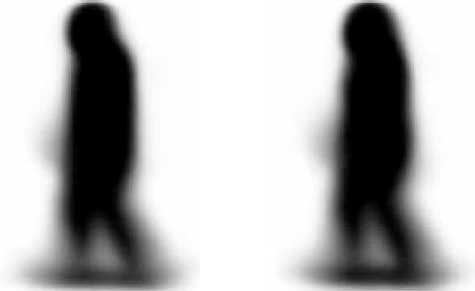
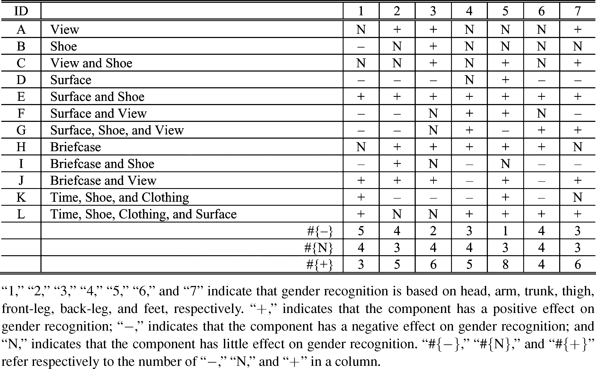

| Page 1 |
IEEE TRANSACTIONS ON SYSTEMS, MAN, AND CYBERNETICS—PART C: APPLICATIONS AND REVIEWS, VOL. 38, NO. 2, MARCH 2008
145
Gait Components and Their Application
to Gender Recognition
, Stephen J. Maybank
, Member, IEEE
1094-6977/$25.00 © 2008 IEEE
Xuelong Li, Senior Member, IEEE
Shuicheng Yan, Member, IEEE, Dacheng Tao
Abstract—Human gait is a promising biometrics resource. In
this paper, the information about gait is obtained from the motions
of the different parts of the silhouette. The human silhouette
is segmented into seven components, namely head, arm, trunk,
thigh, front-leg, back-leg, and feet. The leg silhouettes for the
front-leg and the back-leg are considered separately because,
during walking, the left leg and the right leg are in front or at
the back by turns. Each of the seven components and a number
of combinations of the components are then studied with regard
to two useful applications: human identification (ID) recognition
and gender recognition. More than 500 different experiments on
human ID and gender recognition are carried out under a wide
range of circumstances. The effectiveness of the seven human gait
components for ID and gender recognition is analyzed.
Index Terms—Biometrics, gender recognition, human gait
recognition, visual surveillance.
I. INTRODUCTION
C
toring systems. In these applications, human beings are usually
OMMERCIAL visual surveillance has many applications,
e.g., in public transportation, banks, and car park moni-
among the main foci of attention. Therefore some kind of bio-
metric information [20], [32] should be extracted from surveil-
lance sequences to help in the classification and analysis of
behavior.
Previously, biometric research has concentrated on human
authentication and authorization, utilizing face images, finger-
prints, palm prints, shoeprint, iris images, and handwriting,
but these conventional biometric resources suffer from several
limitations.
1) Distance between camera/scanner and people: At present,
none of the aforementioned conventional biometrics can
work well from a large distance. In visual surveillance,
the distances between the cameras and the people under
surveillance are often large. The camera may be set on the
Manuscript received January 21, 2007; revised May 25, 2007 and August 25,
2007. This paper was recommended by Associate Editor Z. Wang.
X. Li and S. J. Maybank are with the School of Computer Science and In-
formation Systems, Brikbeck College, University of London, London WC1E
7HX, U.K. (e-mail: xuelong@dcs.bbk.ac.uk; sjmaybank@dcs.bbk.ac.uk).
S. Yan is with the Department of Electrical and Computer Engineering, Na-
tional University of Singapore, Singapore 117576.
D. Tao is with the Biometric Research Center, Department of Computing,
Hong Kong Polytechnic University, Kowloon, Hong Kong, China (e-mail: cs-
dct@comp.polyu.edu.hk).
D. Xu is with the School of Computer Engineering, Nanyang Technological
University, Singpore Blk N4, Singapore (e-mail: dongxu@ntu.edu.sg).
Color versions of one or more of the figures in this paper are available online
at http://ieeexplore.ieee.org.
Digital Object Identifier 10.1109/TSMCC.2007.913886
, Senior Member, IEEE,
, and Dong Xu, Member, IEEE
top of a building, in the ceiling of a corridor, or wherever
a panorama of the surveyed area can be obtained. In these
situations, it is almost impossible to acquire the detailed
conventional biometric information.
2) People (user) cooperation: This is often required to cap-
ture conventional biometric information. For example, a
scanner may be provided to obtain a fingerprint or a palm
print. The scanner must be used in the correct way. The re-
quirements are even stricter for iris recognition because it
is necessary to look through an eyepiece. Most of the cur-
rent face databases have been built with the participants’
cooperation. For these applications, people are normally
the users of the system.
3) People’s (user) attention in authentication and authoriza-
tion: Previous work on conventional biometrics resources
has focussed on the recognition rate, but paid less attention
to other aspects, e.g., manners. For instance, it might not
be polite to ask a person to stare at a camera that is used
to capture iris patterns. Even worse, when something goes
wrong with the system, the person has to repeat the action.
For visual surveillance applications, the earlier conventional
biometrics resources are difficult to utilize, and human gait pro-
vides an interesting alternative. A gait describes the manner
of a person’s walking. It can be acquired at a distance, and if
necessary, without the walker’s cooperation or knowledge.
Human gait information was analyzed first in surgery [29]
and psychology [11], [18]. In surgical applications, a patient’s
gait pattern was a basis for choosing an appropriate medical
treatment (in this case, the data were gained at a close range).
Murray [29] classified pathologically abnormal gaits into several
groups for suitable treatments. This classification was achieved
by comparing a patients’ gait patterns with normal gait patterns
obtained from a control group. Johansson reported in [18] that
walking subjects could be recognized on the basis of their gaits
alone. In the scope of computer science, some early efforts to
recognize a person by gait are introduced in [5], [23], and [30].
Many other efforts have also been spent on gait information
processing [2], [4], [6], [9], [10], [12], [19], [22], [38], and
since then, gait silhouette information has been widely utilized,
e.g., in [8], [14], [21], [37], and [39]. Human gait recognition
(HGR) has applications not only in visual surveillance but also
in human computer interaction, access control, human motion
analysis [1], [7], and identification [32]. Some important surveys
along with detailed comparisons of different algorithms can be
found in [1], [13], [16], and [27].
Human gait is affected by certain factors, including physi-
cal characteristics of people and environmental factors, such as:
| Page 2 |
146
IEEE TRANSACTIONS ON SYSTEMS, MAN, AND CYBERNETICS—PART C: APPLICATIONS AND REVIEWS, VOL. 38, NO. 2, MARCH 2008
1) camera factors, such as viewpoint [31], affect the measure-
ment of the gait (and do not normally affect the gait itself); 2)
time elapsed [31], [34] is also a key issue in visual surveillance;
3) the walking figure’s carrying status [35] and clothing such as
clothes and shoes [31]; 4) kinematics features such as walking
speed [33], bounciness, and rhythm [24], note that qualities such
as bounciness and rhythm are properties of the gait itself; and
5) other factors, such as injury, disguise, image quality [25], ob-
server’ familiarity with the people under surveillance, lighting,
background, and walking surface. The human ID dataset [32]
studied several of these factors and provided baseline algorithms
for researchers. So far, how to measure the effect of each factor
or combination of factors is still an open issue.
Any one factor may be correlated with other factors. For ex-
ample, a change in a walking surface or a shoe type may cause
a change in speed. These correlations between different factors
can be very significant because the different components of a
person’s gait have wide variations as compared with conven-
tional biometrics, e.g., a person’s hand could touch his leg or
head. These large variations are not found in conventional bio-
metrics, e.g., we cannot move the eyes below the nose—in other
words, the relative positions of the eyes and nose on the face can
vary only over a small range. The larger variations in gait make
the gait difficult to measure, but at the same time, indicate that a
large amount of information might be recovered from the gait.
From the aforementioned examples, we can understand that the
correlations between the different gait factors/components are
very significant for human recognition and gender recognition.
In this paper, we first separate human gait into seven com-
ponents, and then, perform human gait recognition first based
on the entire human gait silhouette, then on each of the seven
components individually, and finally, on certain combinations
of the seven components. The results show that the gait is help-
ful for efficiently and effectively recognizing people. Moreover,
human gait not only shows the distinctive moving silhouette of
a human body, but also reflects the walker’s physical situation
and even his or her psychological state. Therefore, after studying
different components of the human silhouette and their contribu-
tion to human gait recognition, we also studied the effectiveness
of these components for human gender recognition, which has
useful applications in commercial visual surveillance.
The rest of the paper is organized as follows. Section II in-
troduces the human gait modeling scheme, and describes the
segmentation of the human silhouette into seven components.
Section III introduces the dataset utilized for the experiments.
The use of gait for human recognition and gender recognition is
studied in Sections IV and V, respectively. Finally, the conclu-
sion is drawn in Section VI.
II. HUMAN GAIT MODELING
We segment the averaged gait image into seven components
according to the usually segmentation method as shown in
Fig. 1.The first component is the head; the second component is
the arm (it also includes the breast); the third component is the
trunk (different from traditional “trunk,” the trunk in this paper
excludes the breast); the fourth component is the thigh (it also
Fig. 1.
Three-sided human view (adapted from http://www.vbflorida.com/
htmassage/clientinfoform.cfm with minor changes).
Fig. 2.
Averaged human gait image partition model (the bottom component is
part 7).
includes the hip); the fifth component is the front leg; the sixth
component is the back leg; and the seventh component is the
feet. The front-leg and back-leg are included as separate com-
ponents because of the bipedal walking style. During walking,
the left-leg and the right-leg come to front/back by turns. The
resulting partition is shown in Fig. 2.
The averaged gait image partition model is constructed by the
following steps.
1) Calculate the mean image of all averaged gait images in the
gallery set (Fig. 4 shows sample images for average gait;
Table I describes probe and gallery sets, and Section IV-A
describes how to obtain the averaged gait image) [32].
2) Select six control points according to Fig. 2. Here, two
points are marked on the mean image of all averaged gait
images in the gallery to locate the head; two points are
marked to locate the arm (including breast) and trunk; one
point is marked to indicate the thigh (with hip); and one
point is marked to indicate the feet. The six control points
are shown in the left subfigure of Fig. 2.
3) Use lines to connect the relevant pairs of points to partition
the mean image into seven parts. The connections between
the points are shown in the left subfigure of Fig. 2, and the
resulting segmentation is shown in the right subfigure of
Fig. 2.
Fig. 3 the seven templates are shown in white. The subfigures
from left to right can extract head, arm (with breast), trunk, thigh
(with hip), front leg, back leg, and feet, respectively, from an
averaged gait image.
| Page 3 |
: GAIT COMPONENTS AND THEIR APPLICATION TO GENDER RECOGNITION
TABLE I
W
LI et al.
TWELVE PROBE SETS FOR CHALLENGE EXPERIMENTS, IN
Fig. 3.
Seven templates are shown in white. The subfigures from left to right
can extract head, arm (with breast), trunk, thigh (with hip), front-leg, back-leg,
and feet, respectively, from an AGI.
The segments shown in the right subfigure of Fig. 2 cor-
respond to the seven templates in Fig. 3. The image segment
corresponding to a given template is extracted from an averaged
gait image by placing the template on the gait image and se-
lecting all the pixels in the gait image corresponding to the high
values in the template. By this means, the complement to a se-
lected component can also be obtained. The subfigures in Fig. 3
from left to right correspond to seven components shown in the
right subfigure in Fig. 2. They are head, arm (with breast), trunk,
thigh (with hip), front-leg, back-leg, and feet, respectively.
III. BRIEF REVIEW OF THE USF GAIT DATABASE
The experimental images were taken from the University of
South Florida (USF) HumanID outdoor gait (people–walking–
sequence) database that has been built and widely utilized for
vision-based gait recognition. It consists of 1870 sequences from
122 subjects. For each of the subjects, there exist the following
covariates: change in viewpoint (left or right), change in shoe
type (A or B), change in walking surface (grass or concrete),
change in carrying condition (carrying a briefcase or no brief-
case), and change in elapsed time (May or November) between
sequences being compared. All these covariates are important
for different aspects/applications. Probably, the effect of a co-
variate is more cleanly captured by its impact on the match
scores, and it can possibly be measured by testing two probe
sets that differ in only one factor. Herein, the silhouette data are
normalized in USF HumanID, and the alignment has already
been done.
There is a set of 12 predesigned experiments [32] for algo-
rithm comparison. For classifier training, the database provides
a gallery, which was collected in May, with the following covari-
ates: grass, shoe type A, right camera, and no briefcase, which
includes several new subjects in November. The gallery set has
147
HICH H, I, AND J FOCUS ON THE Car r yingSTATUS (BF)
Fig. 4.
AGIs in the gallery set.
122 individuals, of which 85 are males and 37 are females. The
averaged gait image (with size 128×88 and provided by the
USF database) contains the human gait information available to
the classifier. Examples from the gallery set are given in Fig. 4.
For algorithm testing, 12 probe sets are constructed according
to the 12 predesigned experiments. Detailed information about
the probe sets is given in Table I.
IV. EXPERIMENTS ON HGR
Human gait is an important biometric for identification.
Current research on gait recognition is usually based on an
averaged gait image or a silhouette sequence, or a motion
structure model. The movements of the different components
(e.g., head, arm, and thigh) in the averaged gait image have not
been studied closely.
In the following, the gait recognition algorithm is briefly
described. Then, we describe a series of experiments to demon-
strate the impact of each component on gait recognition. Finally,
experimental results are analyzed.
A. Human Gait Recognition
Fig. 4 shows some examples of average gaits (AGs), which
demonstrate that AGs could be used for gait recognition and
gender recognition, because different people have different
| Page 4 |
148
IEEE TRANSACTIONS ON SYSTEMS, MAN, AND CYBERNETICS—PART C: APPLICATIONS AND REVIEWS, VOL. 38, NO. 2, MARCH 2008
TABLE II
ESULTS FOR
RANK 1 EXPERIMENTAL R
AGs. The AG is the mean image (pixel by pixel) of silhouettes
over a gait cycle within a sequence of images. As suggested
in [26], a sequence of images is partitioned into a series of subse-
quences according to the gait period of length NGait . Then, the
binary images (silhouettes) within one cycle (a subsequence)
are averaged to yield AGs by means of
AG
i
|
i
T /N
= 1
G ait
=
(
k
k
= (
=
i
iN
+ 1)
G ait
N
G ait
−
1
S
(
k
))
/N
Gait
, where
S
(
k
)
stands for the
k
silhouette, as stated earlier, a binary image. As an average value,
AG is very robust against any errors in individual frames, so we
choose the AG to represent a gait cycle. One sequence yields
several AGs and the number of AGs depends on the number of
gait cycles in the sequence. In the following experiments, the
AGs provide the data for gait recognition.
The distance defined between the gallery sequence and the
probe sequence is defined as in [26] by
Dist
AG
M ethod
P
,
AG
M ethod
G
=Median
N
i
p
= 1
min
N
j
G
= 1
AG
M ethod
P
(
i
)
−
AG
M ethod
G
(
j
)
(1)
where
AG
M ethod
P
(
i
)
|
i
N
P
= 1
is the
i
th projected AG in the probe data
and
AG
M ethod
G
(
j
)
|
j
N
G
= 1
is the
j
th projected AG in the gallery.
Equation (1) uses the median of the Euclidean distances be-
tween the averaged silhouettes from the probe and the gallery
sequences.
The difference between (1) and the gait recognition measure
developed by Liu et al. [26] is that we choose a template to
pop out only the relevant component for recognition. The al-
gorithm is shown in Fig. 5. We first segment each sequence
in the gallery set (training set) into a few subsequences where
each subsequence is a complete gait cycle. We then calculate
the averaged gait image for each subsequence of images and
use the template to select a component or its complement from
each averaged gait image. The same procedure is carried out on
the probe set (test set). Finally, the similarities are calculated
between: 1) a testing sample of average gait image (AGI) from
the probe set (it could be a part or several parts of the entire AG)
and 2) all AGIs stored in the gallery set. Then, this sample from
the probe set is recognized by (1).
HUMAN GAIT RECOGNITION
Fig. 5.
Extraction of the average gait and the similarity measure.
B. Experimental Results
We first conduct 15 groups of experiments to examine the
effectiveness of the averaged gait image, each component of the
averaged gait image, and the complement of each component
for gait recognition. Table II lists the recognition rates. Note that
different from the data set provided in Table I, we here focus on
the contribution of different parts/component of human AGI to
human recognition.
We also conduct a number of experiments to examine the
cooccurrence effects of pairs of components on the gait recog-
nition. It would be difficult to conduct experiments on all 252
pairs and get useful information from them. Therefore, we only
conduct experiments on pairs of two parts, which may possibly
reduce the recognition rates or may not impact the recogni-
tion rate compared to the performance obtained by using the
| Page 5 |
: GAIT COMPONENTS AND THEIR APPLICATION TO GENDER RECOGNITION
TABLE III
ESULTS FOR
LI et al.
RANK 1 EXPERIMENTAL R
whole averaged gait image (i.e., we only select pairs for which
strong effects are expected). For example, in probe A, both the
fifth component and the seventh component have a negative im-
pact on the recognition rate, while the complement of the fifth
component and the complement of the seventh component can
improve the recognition rate. Therefore, we need to investigate
the performance when we remove both the components from
the averaged gait image. All results from the examination of
co-occurrence effects are shown in Table III.
C. Discussion
We first evaluate the effect of each component on gait recog-
nition, as shown in Table II. We deem that a component has
a positive effect on gait recognition if the recognition rate is
significantly reduced when the component is removed from the
averaged gait image. A component has a negative impact on
gait recognition if the recognition rate is significantly increased
when the component is removed from the averaged gait image.
Otherwise, we deem that the component has little effect on the
gait recognition. For example, the head has a positive impact for
the probe A test, because the recognition rate is 77 if we remove
the head from the averaged gait image and the recognition rate
is 83 if we use all components for recognition. The front-leg has
a negative contribution for the probe A test, because the recog-
nition rate is 84 without the front-leg, and the recognition rate
is 83 with all components for recognition. The trunk has little
effect on the recognition rate in probe B because the recognition
rate is the same with or without the trunk. A full analysis of the
results is given in Table IV.
The preliminary analysis in Table IV and the experimental
results in Tables II and III are summarized by the following
observations listed in Table V for all probes.
149
HUMAN GAIT RECOGNITION
The following conclusions are drawn from Table V. For per-
son identification, head, arm, trunk, and back-leg usually pro-
vide the best discriminating information. The inclusion of the
front-leg usually reduces the recognition rate. When the probe
set differs from the gallery set in terms of walking surface or
the carrying of a briefcase, the inclusion of the thigh reduces the
recognition rate. Otherwise, the inclusion of the thigh usually
increases the recognition rate. The usefulness of the feet for
recognition is unclear.
V. E XPERIMENTS ON HGR
Gender recognition has received a fair amount of attention in
the psychophysical and computer vision literature, especially
in the case of gender recognition based on the face. There are
relatively few gait-based studies. In [17], a human face image
is treated as a vector, and independent component analysis
(ICA) is then applied to reduce the dimension of the data space.
A support vector machine (SVM) is used to further improve
the classification performance. The SVM is also used in [28]
for gender recognition based on face images. In [36], an input
image is coarsely divided into face, hair, and clothing regions,
and a model is learned independently for each region. The final
classification of the face image is made by using a Bayesian
approach. Local regions are used for gender recognition in [3]:
the similarity values between N local regions and M face images
in the training set are used as features, PCA is used to reduce
the dimension of the feature space and remove the noise, and
then an SVM or Fisher linear discriminant analysis (LDA) is
used for the final classification. The algorithm achieves high
recognition accuracy on a database with 13 000 frontal or
nearly frontal face images. In the future, locality preserving
projections (LPP) [15] could be the basis of an algorithm to
| Page 6 |
150
IEEE TRANSACTIONS ON SYSTEMS, MAN, AND CYBERNETICS—PART C: APPLICATIONS AND REVIEWS, VOL. 38, NO. 2, MARCH 2008
TABLE IV
PRELIMINARY EVALUATION OF THE IMPACT OF EACH COMPONENT ON HUMAN GAIT RECOGNITION
TABLE V
OBSERVATIONS FROM EXPERIMENTS
select features for subsequent gender classification, e.g., by
that the averaged gait images for males and females differ in
an SVM. LPP has been proposed to discover the nonlinear
several ways, for example: 1) for the arm (with breast) com-
structure of data, which lie on or nearly on a low-dimensional
ponent, the breast area of females is not so flat as that of
manifold embedded in a high-dimensional space.
males; 2) for the trunk component, the back neck area is more
In this paper, we show that the averaged gait image can be
curved for males than for females, possibly because males tend
used for gender recognition. An examination of Fig. 6 shows
to have less hair than females; and 3) difference on all other
| Page 7 |
: GAIT COMPONENTS AND THEIR APPLICATION TO GENDER RECOGNITION
TABLE VI
R
LI et al.
EXPERIMENTAL RESULTS FOR HUMAN GENDER
Fig. 6.
Male versus female. The left subfigure is the mean image of all male
averaged gait images, and the right subfigure is the mean image of all female
averaged gait images.
gait parts/components, e.g., the front-leg component, the dark
area of the lower part is wider for females. The performance of
the averaged gait-image-based gender recognition is impressive
compared with the normal human ability to recognize gender
using motion information.
In the following, the averaged gait-image-based gender recog-
nition algorithm is described briefly. Then, we conduct experi-
ments to demonstrate the impact of each component on gender
recognition. Finally, an analysis of the experimental results is
given.
A. AGI-Based Gender Recognition
The gender recognition procedure is shown in Fig. 7. In the
gallery, we first segment each sequence into a subsequences
such that each subsequence corresponds to a complete walking
period. We then calculate the averaged gait image and use the
template to select a part or its complement in all subsequences in
the gallery and probe sets. We train a linear SVM classifier based
on the averaged gait image, a selected part, or its complement.
The averaged gait image, a selected part, or its complement of
a sample in a probe is classified by the trained SVM. Finally, a
voting scheme is used to obtain the final decision.
B. Recognition Performance
We first conduct 15 groups of experiments to examine the
performances of the averaged gait image, each component of the
151
ECOGNITION FROM AVERAGED GAIT IMAGES
Fig. 7.
SVM-based gender recognition algorithm. The five images at the top
of the figure are the AGIs of a sequence, which represents a person’s gait. The
block in the middle of the figure with some averaged gait images represents
the training set and the SVM classifier. The blocks at the bottom of the figure
represent the voting scheme. The test sample represented by the five averaged
gait images is classified as female.
averaged gait image, and the complement of each component
for gender recognition. Table VI shows the recognition rates.
We also conduct a number of experiments to examine the
cooccurrence effects of pairs of parts on gender recognition. It
would be difficult to conduct experiments on all 252 pairs and
get useful information from them. Therefore, we only conduct
experiments on pairs of parts, which can reduce the recognition
rate or have little effect on the recognition rate. Then, whether the
omission of the two parts causes a reduction in the recognition
rate will be examined later. For example, in probe A, the first
part, the fourth part, the fifth part, and the sixth part have little
effect on the recognition rate, because the complements of these
components do not reduce or improve the recognition rate. We
investigate the recognition rates when both of the selected parts
are removed from the averaged gait image. All the results from
these experiments are shown in Table VII.
| Page 8 |
152
IEEE TRANSACTIONS ON SYSTEMS, MAN, AND CYBERNETICS—PART C: APPLICATIONS AND REVIEWS, VOL. 38, NO. 2, MARCH 2008
TABLE VII
EXPERIMENTAL RESULTS FOR GENDER RECOGNITION FROM AVERAGED GAIT IMAGES
TABLE VIII
PRELIMINARY EVALUATION OF THE IMPACT OF EACH COMPONENT ON GENDER RECOGNITION
C. Discussion
gender recognition if the recognition rate is increased when the
The following observations and conclusions are drawn from
component is removed from the averaged gait image. Other-
Tables VI and VII. In the case of Table VI, we deem that a
wise, we deem that the component has little effect on gender
component has a positive effect on gender recognition if the
recognition. For example, the arm has a positive effect for the
recognition rate decreases when the component is removed from
probe A test, because the recognition rate is 96 if the arm is
the averaged gait image. A component has a negative effect on
removed from the averaged gait image and the recognition rate
| Page 9 |
: GAIT COMPONENTS AND THEIR APPLICATION TO GENDER RECOGNITION
TABLE IX
ROM
LI et al.
OBSERVATIONS F
is 98 if all components are used for the recognition. The head
has a negative effect for the probe B test, because the recog-
nition rate is 100 without the head and the recognition rate is
98 if all components are included. The thigh has little effect on
the recognition rate for probe A because the recognition rate is
same with or without trunk.
Based on the preliminary analysis in Table VIII and the ex-
perimental results in Tables VI and VII, we make the following
observations listed in Table IX for all probes.
The following conclusions are drawn from Table IX. Trunk
and front-leg usually increase the gender recognition rate. When
the probe set is different from the gallery set in terms of surface,
arm reduces the recognition rate, and when the probe set is
different from the gallery set in terms of briefcase, thigh reduces
the recognition rate. Otherwise, arm and thigh usually increase
the recognition rate. The head, back-leg, and feet have only
negligible effects on the gender recognition rate.
VI. CONCLUSION
With strong empirical evaluation, this paper first focuses
on the idea of using silhouette-based gait analysis for gender
recognition—in details, the application of human gait infor-
mation to human recognition and gender recognition has been
studied. The following has been demonstrated.
1) The gait of the head, arm, trunk, and back-leg are important
for averaged gait-based human recognition.
2) The inclusion of the gait of the front-leg usually reduces
the recognition rate.
3) The contributions of the feet to recognition are not clear.
4) The inclusion of the gait of the thigh reduces the recogni-
tion rate when the probe set is different from the gallery set
in terms of walking surface or the carrying of a briefcase.
5) The gaits of the trunk and front-leg are usually important
for gender recognition.
6) The gaits of the head, back-leg, and feet are not helpful
for gender recognition.
153
EXPERIMENTS
7) The gaits of the arm and thigh reduce the gender recogni-
tion rate when the probe set is different from the gallery set
in terms of walking surface or the carrying of a briefcase.
Gait analysis is difficult because of the wide variety of move-
ments of the different parts of the body, but at the same time the
experiments suggest that a large amount of useful information
can be obtained from gait, e.g., according to our experiences,
if one falls down on the street, the change of his feet silhouette
component has a large probability to lead a change of other com-
ponents. The AGI has been shown to be effective for both human
ID recognition and gender recognition. Nevertheless, the AGI
ignores the temporal information that is intuitively useful for un-
derstanding a gait. Our future work will focus on the robust ex-
traction and modeling of the dynamic properties of a walking se-
quence, and then, use these properties for dynamic gait analysis.
ACKNOWLEDGMENT
The authors would like to thank the Associate Editor and all
reviewers for their constructive comments.
REFERENCES
[1] J. Aggarwal and Q. Cai, “Human motion analysis: A review,” Comput.
Vis. Image Understanding, vol. 73, pp. 428–440, 1999.
[2] C. Ben-Abdelkader, R. Cutler, and L. Davis, “Person identification using
automatic height and stride estimation,” in Proc. Int. Conf. Pattern Recog.,
2002, vol. 4, pp. 377–380.
[3] C. Ben-Abdelkader and P. Griffin, “A local region-based approach to gen-
der classification from face images,” in Proc. IEEE Comput. Vis. Pattern
Recog., Jun. 2005, vol. 3, pp. 52–52.
[4] A. Bissacco, A. Chiuso, Y. Ma, and S. Soatto, “Recognition of human
gaits,” in Proc. IEEE Comput. Vis. Pattern Recog., Kauai, HI, 2001, vol. 2,
pp. 52–57.
[5] J. E. Boyd and J. J. Little, “Motion from transient oscillations,” presented
at the IEEE Int. Conf. Pattern Recog., Tech. Sketeches CD-ROM. Kauai,
HI, 2001.
[6] A. Bobick and A. Johnson, “Gait recognition using static activity—
Specific parameters,” in IEEE Comput. Vis. Pattern Recog., Kauai, HI,
2001, vol. 1, pp. 423–430.
[7] J. E. Boyd, “Synchronization of oscillations for machine perception of
gaits,” Comput. Vis. Image Understanding, vol. 96, no. 1, pp. 35–59,
2004.
| Page 10 |
154
IEEE TRANSACTIONS ON SYSTEMS, MAN, AND CYBERNETICS—PART C: APPLICATIONS AND REVIEWS, VOL. 38, NO. 2, MARCH 2008
[8] R. T. Collins, R. Bross, and J. Shi, “Silhouette-based human identification
from body shape and gait,” in Proc. IEEE Face Gesture, Washington, DC,
2002, pp. 351–356.
[9] D. Cunado, M. Nixon, and J. Carter, “Automatic extraction and description
of human gait models for recognition purposes,” Comput. Vis. Image
Understanding, vol. 90, no. 1, pp. 1–41, 2003.
[10] R. Cutler and L. Davis, “Robust periodic motion and motion symmetry
detection,” in Proc. IEEE Int. Conf. Pattern Recog., Hilton Head, SC,
2000, pp. 615–622.
[11] J. Cutting and D. Proffitt, “Gait perception as an example of how we may
perceive events,” Intersens. Percept. Sens. Integr., vol. 2, pp. 249–273,
1981.
[12] J. W. Davis and A. F. Bobick, “The representation and recognition of
human movement using temporal templates,” in Proc. IEEE Comput. Vis.
Pattern Recog., San Juan, Puerto Rico, 1997, pp. 928–934.
[13] D. Gavrila, “The visual analysis of human movement: A survey,” Comput.
Vis. Image Understanding, vol. 73, pp. 82–98, 1999.
[14] J. Han and B. Bhanu, “Statistical feature fusion for gait-based human
recognition,” in Proc. IEEE Comput. Vis. Pattern Recog., 2004, vol. 2,
pp. 842–847.
[15] X. He, S. Yan, Y. Hu, P. Niyogi, and H.-J. Zhang, “Face recognition using
laplacianfaces,” IEEE Trans. Pattern Anal. Mach. Intell., vol. 27, no. 3,
pp. 328–3410, Mar. 2005.
[16] W. Hu, T. Tan, L. Wang, and S. Maybank, “A survey on visual surveillance
of object motion and behaviors,” IEEE Trans. Syst., Man Cybern. C.,
vol. 34, no. 3, pp. 334–352, Aug. 2004.
[17] A. Jian and J. Huang, “Integrating independent components and support
vector machines for gender classification,” in Proc. Int. Conf. Pattern
Recog., 2004, vol. 3, pp. 558–561.
[18] G. Johansson, “Visual motion perception,” Sci. Amer., vol. 232, pp. 76–88,
1975.
[19] A. Kale, A. Sundaresan, A. N. Rajagopalan, N. P. Cuntoor, A. K. Roy-
Chowdhury, V. Kruger, and R. Chellappa, “Identification of humans us-
ing gait,” IEEE Trans. Image Process., vol. 13, no. 9, pp. 1163–1173,
2004.
[20] S. Kung, M. Mak, and S. Lin, Biometric Authentication.
Englewood
Cliffs, NJ: Prentice-Hall, 2004.
[21] L. Lee, G. Dalley, and K. Tieu, “Learning pedestrian models for silhouette
refinement,” in Proc. IEEE Int. Conf. Comput. Vis., Nice, France, 2003,
vol. 1, pp. 663–670.
[22] L. Lee and W. E. L. Grimson, “Gait analysis for recognition and classifica-
tion,” in Proc. IEEE Face Gesture, Washington, DC, 2002, pp. 155–162.
[23] J. Little and J. Boyd, “Recognizing people by their gait: The shape of
motion,” Videre, vol. 1, no. 2, pp. 1–32, 1998.
[24] F. Liu and R. W. Picard, “Finding periodicity in space and time,” in Proc.
IEEE Int. Conf. Comput. Vis., 1998, pp. 376–383.
[25] Z. Liu, L. Malave, and S. Sarkar, “Studies on silhouette quality and gait
recognition,” in Proc. IEEE Comput. Vis. Pattern Recog., 2004, vol. 2,
pp. 704–711.
[26] Z. Liu and S. Sarkar, “Simplest representation yet for gait recognition:
Averaged silhouette,” in Proc. Int. Conf. Pattern Recog., Cambridge, U.K.,
2004, vol. 4, pp. 211–214.
[27] T. Moeslund and E. Granum, “A survey of computer vision-based human
motion capture,” Comput. Vis. Image Understanding, vol. 81, no. 3,
pp. 231–268, 2001.
[28] B. Moghaddam and M.-H. Yang, “Learning gender with support faces,”
IEEE Trans. Pattern Anal. Mach. Intell., vol. 24, no. 5, pp. 707–711, May
2002.
[29] M. Murray, A. Drought, and R. Kory, “Walking pattern of normal men,”
J. Bone Joint Surg., vol. 46-A, no. 2, pp. 335–360, 1964.
[30] S. Niyogi and E. Adelson, “Analyzing and recognizing walking figures
in XYT,” in Proc. IEEE Comput. Vis. Pattern Recog., Seattle, WA, 1994,
pp. 469–474.
[31] P. Phillips, S. Sarkar, I. Robledo, P. Grother, and K. Bowyer, “The gait
identification challenge problem: Datasets and baseline algorithm,” in
Proc. IEEE Int. Conf. Pattern Recog., 2002, vol. 1, pp. 385–388.
[32] S. Sarkar, P. Phillips, Z. Liu, I. Vega, P. Grother, and K. Bowyer, “The
humanid gait challenge problem: Data sets, performance, and analysis,”
IEEE Trans. Pattern Anal. Mach. Intell., vol. 27, no. 2, pp. 162–177, Feb.
2005.
[33] R. Tanawongsuwan and A. Bobick, “Modelling the effects of walking
speed on appearance-based gait recognition,” in Proc. IEEE Comput. Vis.
Pattern Recog., Washington, DC, 2004, vol. 2, pp. 783–790.
[34] D. Tao, X. Li, X. Wu, and S. Maybank, “Elapsed time in human gait
recognition: A new approach,” in Proc. IEEE ICASSP, 2006, pp. 177–
180.
[35] D. Tao, X. Li, X. Wu, and S. Maybank, “Human carrying status in visual
surveillance,” in Proc. IEEE Comput. Vis. Pattern Recog., 2006, pp. 1670–
11677.
[36] K. Ueki, H. Komatsu, S. Imaizumi, K. Kaneko, N. Sekine, J. Katto, and
T. Kobayashi, “A method of gender classification by integrating facial,
hairstyle, and clothing images,” in Proc. Int. Conf. Pattern Recog., 2004,
pp. 446–449.
[37] G. Veres, L. Gordon, J. Carter, and M. Nixon, “What image information is
important in silhouette-based gait recognition?,” in Proc. IEEE Comput.
Vis. Pattern Recog., Washington, DC, 2004, vol. 2, pp. 776–782.
[38] L. Wang, H. Ning, T. Tan, and W. Hu, “Fusion of static and dynamic body
biometrics for gait recognition,” in Proc. IEEE Int. Conf. Comput. Vis.,
2003, vol. 2, p. 1449.
[39] L. Wang, T. Tan, H. Ning, and W. Hu, “Silhouette analysis-based gait
recognition for human identification,” IEEE Trans. Pattern Anal. Mach.
Intell., vol. 25, no. 12, pp. 1505–1518, Dec. 2003.
Xuelong Li (M’02–SM’07) holds a permanent post
in the School of Computer Science and Information
Systems, Birkbeck College, University of London,
London, U.K. and is a Visiting Professor with Tianjin
University, Tianjin, China. His research interests in-
clude digital image/video processing, analysis, re-
trieval, and indexing, pattern recognition, biometrics,
and visual surveillance. His research activities are
partly sponsored by the Engineering and Physical Sci-
ences Research Council, the British Council, Royal
Society, etc. He has around 90 scientific publications.
Dr. Li is an Associate Editor of the IEEE TRANSACTIONS ON SYSTEMS, MAN,
AND CYBERNETICS—PART B: CYBERNETICS, IEEE TRANSACTIONS ON SYS-
TEMS, MAN, AND CYBERNETICS—PART C: APPLICATIONS AND REVIEWS, IEEE
TRANSACTIONS ON IMAGE PROCESSING, and IEEE TRANSACTIONS ON CIRCUITS
AND SYSTEMS FOR VIDEO TECHNOLOGY. He is also an Editor of two books,
an Editorial Board Member of several other journals, and a Guest Coeditor of
seven special issues. He is the recipient of several best paper awards and nomi-
nations. He has served as a Chair or a Cochair of a dozen conferences, including
as a Publicity Cochair of the 2008 IEEE International Conference on Systems,
Man, and Cybernetics (SMC), and a Program Committee Member for more
than 70 conferences, including the annual SMC conferences. He is a member of
several technical committees, including the IEEE SMC Technical Committees
on Computational Intelligence, Machine Learning, and Self-Organization and
Cybernetics for Informatics.
Stephen J. Maybank (M’97–SM’06) received the
B.A. degree in mathematics from King’s College,
Cambridge, U.K., in 1976, and the Ph.D. degree in
computer science from Birkbeck College, University
of London, London, U.K., in 1988.
From 1980 to 1995, he was a Research Scien-
tist at the General Electric Company (GEC), first at
Marconi Command and Control Systems (MCCS),
Frimley, and then, from 1989, at the GEC Marconi
Hirst Research Centre, London. During 1995, he was
a Lecturer in the Department of Computer Science,
University of Reading, Reading, U.K. Since 2004, he has been a Professor in
the School of Computer Science and Information Systems, Birkbeck College,
University of London. His current research interests include camera calibration,
visual surveillance, tracking, filtering, applications of projective geometry to
computer vision and applications of probability, statistics, and information the-
ory to computer vision. He is the author or coauthor of more than 90 scientific
publications and one book.
Prof. Maybank is a Fellow of the Institute of Mathematics and Its Applica-
tions and the Royal Statistical Society.
Shuicheng Yan (M’06) received the B.S. and Ph.D.

degrees from Peking University, Beijing, China, in
1999 and 2004, respectively.
He is currently an Assistant Professor with the
Department of Electrical and Computer Engineering,
National University of Singapore, Singapore. His re-
search interests include computer vision, machine
learning, and data mining.
| Page 11 |
pattern recognition, statistical learning, and multimedia content analysis.
LI et al.: GAIT COMPONENTS AND THEIR APPLICATION TO GENDER RECOGNITION
Dacheng Tao (M’07) received the B.Eng. degree
from the University of Science and Technology of
China, Hefei, the M.Phil. degree from the Chi-
nese University of Hong Kong, Hong Kong, and
the Ph.D. degree from the University of London,
London, U.K.
He is currently an Assistant Professor at the Hong
Kong Polytechnic University, Kowloon. His research
interests include artificial intelligence, computer vi-
sion, data mining, information theory, machine learn-
ing, and visual surveillance. He is the author or coau-
thor of various papers published in several international journals. He is the editor
of two books and a guest editor of six journals. He is an Associate Editor of the
Neurocomputing (Elsevier) journal.
Dr. Tao was the Co-Chaire of the Special Session on Information Security
at the IEEE International Conference on Machine Learning and Cybernetics
(ICMLC) and the Workshop on Knowledge Discovery and Data Mining from
Multimedia Data and Multimedia Applications at the IEEE International Con-
ference on Data Mining. He is the recipient of several Meritorious Awards from
the International Interdisciplinary Contest in Modeling organized by the Con-
sortium for Mathematics and Its Applications.
155
Dong Xu (M’07) received the B.Eng. and Ph.D. de-
grees from the University of Science and Technology
of China, Hefei, in 2001 and 2005, respectively.
He is currently an Assistant Professor with the
School of Computer Engineering, Nanyang Techno-
logical University, Singapore. During his Ph.D. stud-
ies, he was with Microsoft Research Asia, Beijing,
China and The Chinese University of Hong Kong,
Shatin. He has also spent one year at Columbia Uni-
versity, New York, as a Postdoctoral Research Scien-
tist. His research interests include computer vision,